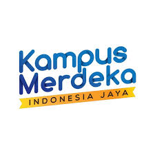

Apa itu Kampus Merdeka?

Deskripsi Singkat
Kampus Merdeka adalah salah satu program dari kebijakan Merdeka Belajar yang dicanangkan oleh
Menteri Pendidikan, Kebudayaan, Riset, dan Teknologi, Nadiem Makarim.
Program ini memberikan hak kepada Mahasiswa untuk belajar diluar kampus
selama dua semester dengan mengikuti berbagai kegiatan yang sesuai dengan minat dan bakat mereka.
Untuk dapat mengikuti program Kampus Merdeka,
Mahasiswa harus memenuhi persyaratan Umum,
seperti memiliki IPK minimal 3,00 telah menyelesaikan minimal 80 SKS
dan mendapat persetujuan dari perguruan tinggi asalnya
Program Kampus Merdeka
Ada beberapa jenis kegiatan yang tersedia di program Kampus Merdeka yakni,
Kampus Mengajar, Pertukaran Mahasiswa, Wirausaha Merdeka, dan Indonesian International Student Mobility Awards (IISMA)
Tagline
Merdeka Belajar untuk seluruh Mahasiswa Indonesia
Copyright by Naufal Latif 23.11.5613